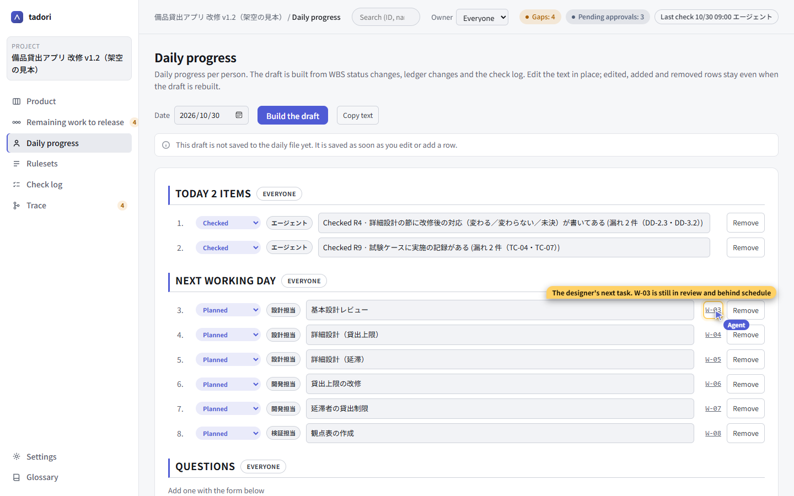
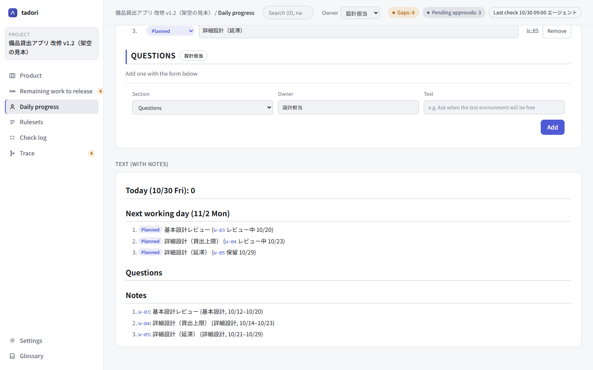

Run each person's daily progress with an agent
Alongside the product-level remaining work, this is about seeing “what I did today, what's next, and what I need to discuss” per person. tadori drafts it from the records, and each person works through it on screen with their own agent.
- Draft built from
- WBS status changes (git history), ledger diffs and the check log
- MCP tools used
- daily (read), daily_generate, daily_add / daily_update / daily_remove, task_update, screen
- What the agent doesn't do
- Approve, decide that a gap is fixed, push
1. The draft is built from the records
Nobody has to write it up from memory before every stand-up. tadori reads the days on which WBS statuses changed (git history), who added or edited ledger rows (looking up commit authors in the people table), and the check log, and drafts “today / next working day / questions” for each person.
Ledger upkeep (adding or editing rows) goes under its own heading, so it isn't mistaken for work on deliverables. Each row starts with a marker such as done, in progress, planned or to confirm.

2. Each person sees only their own work
Pick a person under “Owner” in the top bar and every screen narrows to that person's work. Rows written with a role (such as the designer) are matched through the roles in the people table.
The text view below is drawn with headings, numbered lists and marker labels for easy reading, and clicking a WBS or issue number jumps to it. “Copy text” gives you text ready to paste into the morning or evening stand-up.

3. Move things forward with an agent, on the spot
Each person's agent reads the same daily progress over MCP and, when asked, adds, edits or removes rows with its tools. Moving a task forward is done with task_update, which commits immediately, so the “day the status changed” in the next day's draft is accurate too.
{ "tool": "task_update", "id": "W-03", "status": "done" }
{ "tool": "daily_add", "section": "consult", "who": "Designer", "text": "Need to decide who reviews W-04" }The agent can explain while pointing at the screen with its agent cursor. It never uses your mouse. Rows you edited, added or removed survive when the draft is regenerated.
4. People make the calls
Daily progress is a record, not a verdict. Neither the screen nor MCP has a way to record an approval or decide that a gap is fixed. Pushing is also done by a person after checking the contents.